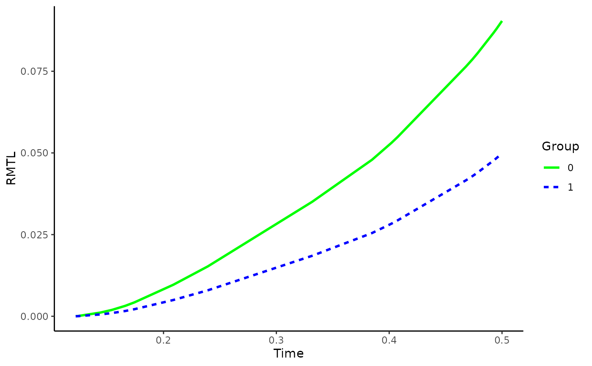

Plot Adjusted Restricted Mean Time Lost Curves
plot_rmtl_curve.RdA function to graphically display the Restricted Mean Time Lost (RMTL) over time, using confounder-adjusted survival curves which were previously estimated using the adjustedsurv function, or cause-specific confounder-adjusted CIFs which were previously estimated using the adjustedcif function. As the other plot functions in this package, it internally uses the ggplot2 package and allows a variety of options. Alternatively plots the difference between or ratio of two adjusted RMTL curves.
Usage
plot_rmtl_curve(adj, times=NULL, conf_int=FALSE,
conf_level=0.95, interpolation="steps",
contrast="none", group_1=NULL, group_2=NULL,
max_t=Inf, color=TRUE, linetype=FALSE,
facet=FALSE, size=1, alpha=1, xlab="Time",
ylab="RMTL", title=NULL, subtitle=NULL,
legend.title="Group", legend.position="right",
gg_theme=ggplot2::theme_classic(),
custom_colors=NULL, custom_linetypes=NULL,
conf_int_alpha=0.4,
line_at_ref=TRUE, line_at_ref_size=0.7,
line_at_ref_color="grey",
line_at_ref_linetype="dashed",
line_at_ref_alpha=1, ...)Arguments
- adj
An
adjustedsurvobject created using theadjustedsurvfunction, or anadjustedcifobject created using theadjustedciffunction.- times
A vector of points in time, passed to the
toargument of theadjusted_rmtlfunction orNULL(default). IfNULL, the adjusted RMTL is estimated at all points at which an event occurred. Otherwise it is estimated attimes.- conf_int
A logical variable indicating whether the bootstrap confidence intervals should be drawn.
- conf_level
Corresponds to the argument of the same name in the
adjusted_rmtlfunction.- interpolation
Corresponds to the argument of the same name in the
adjusted_rmtlfunction.- contrast
Which contrast between two adjusted RMST curves should be plotted. Should be one of
c("none", "diff", "ratio"). See argument of the same name in theadjusted_rmstfunction.- group_1
A single character string specifying one of the possible levels of
variable. This can be used in conjunction with thegroup_2argument to control how the difference or ratio should be calculated when using eithercontrast="diff"orcontrast="ratio". Ignored whencontrast="none"(default). See argument of the same name in theadjusted_rmtlfunction.- group_2
See argument
group_1.- max_t
A number indicating the latest survival time which is to be plotted.
- color
A logical variable indicating whether the curves should be colored differently. The
custom_colorsargument can be used to directly specify which colors to use. Set toFALSEto keep the plot black and white. Ifcontrast="diff"orcontrast="ratio"are used, a character string specifying a color that should be used for the plot can be supplied to this argument directly.- linetype
A logical variable indicating whether the curves should have different linetypes. The
custom_linetypesargument can be used to directly specify which linetypes to use. Set toFALSEto keep all lines solid. Ifcontrast="diff"orcontrast="ratio"are used, a character string specifying a linetype that should be used for the plot can be supplied to this argument directly.- facet
A logical variable indicating whether the curves should be in different facets.
- size
A number controlling the thickness of the RMTL curves.
- alpha
A number controlling the transparency level of the RMTL curves.
- xlab
A character string to be used as the X-Axis label of the plot.
- ylab
A character string to be used as the Y-Axis label of the plot.
- title
A character string to be used as the title of the plot. Set to
NULLif no title should be used.- subtitle
A character string to be used as the subtitle of the plot. Set to
NULLif no subtitle should be used.- legend.title
A character string to be used as the title of the legend. Set to
NULLif no legend should be included.- legend.position
A character string specifying the position of the legend. Ignored if
legend_title=NULL.- gg_theme
A
ggplot2theme object which will be used for the plot.- custom_colors
A (named) vector to specify the colors of each adjusted RMTL curve and possibly its confidence region. Set to
NULLto use theggplot2default values. Ignored ifcolor=FALSE.- custom_linetypes
A (named) vector to specify the linetype of each adjusted RMTL curve. Set to
NULLto use theggplot2default values. Ignored ifcolor=FALSE. Ignored iflinetype=FALSE.- conf_int_alpha
A number indicating the level of transparency that should be used when drawing the confidence regions.
- line_at_ref
Whether to draw a line at the reference value. This line is drawn at 0 if
contrast="diff"and at 1 ifcontrast="ratio". This and all associated argument are ignored otherwise.- line_at_ref_size
A single number specifying the thickness of the line at the reference value.
- line_at_ref_color
A single character string specifying the color of the line at the reference value.
- line_at_ref_linetype
A single character string specifying the linetype of the line at the reference value.
- line_at_ref_alpha
A single number between 0 and 1 specifying the transparency level of the line at the reference value.
- ...
Currently not used.
Details
This function simply calls the adjusted_rmtl for a range of to values, getting adjusted RMTL estimates over the whole range of the survival curves or CIFs. Those estimates are then plotted as a curve with the adjusted RMTL replacing the survival probability or the failure probability on the Y-Axis. For a brief description on the RMTL and how it is calculated in this package, see the documentation of the adjusted_rmtl function. Literature describing the RMTL Curve Plots in more detail is given in the references section.
If confidence intervals are specified and there are many points in time in times, this function might get somewhat slow. It will be even slower if multiple imputation was also used when creating the adjustedsurv or adjustedcif object.
References
Lihui Zhao, Brian Claggett, Lu Tian, Hajime Uno, Marc A. Pfeffer, Scott D. Solomon, Lorenzo Trippa, and L. J. Wei (2016). "On the Restricted Mean Survival Time Curve in Survival Analysis". In: Biometrics 72.1, pp. 215-221
Examples
library(adjustedCurves)
library(survival)
if (requireNamespace("ggplot2") & requireNamespace("riskRegression")) {
library(ggplot2)
set.seed(42)
# simulate some data as example
sim_dat <- sim_confounded_surv(n=50, max_t=1.2)
sim_dat$group <- as.factor(sim_dat$group)
# estimate a cox-regression for the outcome
cox_mod <- coxph(Surv(time, event) ~ x1 + x2 + x3 + x4 + x5 + x6 + group,
data=sim_dat, x=TRUE)
# use it to calculate adjusted survival curves with bootstrapping
adjsurv <- adjustedsurv(data=sim_dat,
variable="group",
ev_time="time",
event="event",
method="direct",
outcome_model=cox_mod,
conf_int=TRUE,
bootstrap=TRUE,
n_boot=15) # should be much bigger in reality
# plot the curves with default values
plot_rmtl_curve(adjsurv)
# plot with confidence intervals
plot_rmtl_curve(adjsurv, conf_int=TRUE)
# plot with difference instead
plot_rmtl_curve(adjsurv, contrast="diff")
# plot with some custom options
plot_rmtl_curve(adjsurv, max_t=0.5, linetype=TRUE,
custom_colors=c("green", "blue"))
}
